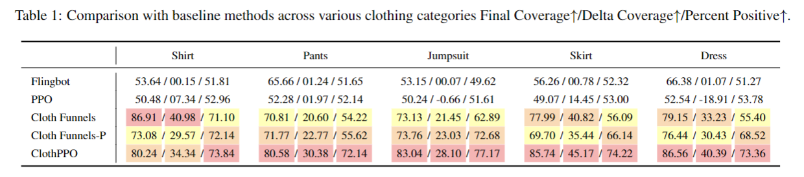

Overview
Simulation Experiments
Comparing Performance Before and After PPO Training
Within the same task, ClothPPO displays a more significant improvement in coverage at every step. In the final stage of the pre-train model, the coverage stagnates due to the action being void. The pre-training model approaches reliance on the argmax action selection strategy, thereby limiting its exploration of other potential actions. In contrast, ClothPPO manifests a broader scope for action exploration.
ClothPPO Final Coverage: 94.0%

Pre-Train Final Coverage: 54.6%
ClothPPO Final Coverage: 95.2%
Pre-Train Final Coverage: 65.7%
Generalize to Unseen Cloth Types.
ClothPPO's requisite reward is based on the coverage of the cloth, which is a universal metric applicable to all clothing categories, thereby obviating the need for training individual models for each distinct class of garments. Our experiments demonstrate that ClothPPO, even when exclusively trained on the Shirt task, exhibits excellent performance and adaptability across multiple types of clothing. Notably, ClothPPO's ability to retain high-performance metrics across varying garment types indicates a substantial capacity for generalization. This is crucial for practical applications wherein robots may be tasked to handle a wide array of garments.
Pants
Final coverage: 88.49%
Final coverage: 85.84%
Final coverage: 92.72%
Final coverage: 90.05%
Jumpsuit
Final coverage: 98.01%
Final coverage: 95.45%
Final coverage: 95.14%
Final coverage: 95.53%
Skirt
Final coverage: 89.76%
Final coverage: 88.92%
Final coverage: 93.04%
Final coverage: 89.65%
Dress
Final coverage: 98.22%
Final coverage: 96.75%
Final coverage: 97.49%
Final coverage: 94.99%
BibTeX
@article{yang2024clothppo,
author = {Libing Yang, Yang Li and Long Chen},
title = {ClothPPO: A Proximal Policy Optimization Enhancing Framework for Robotic Cloth Manipulation with Observation-Aligned Action Spaces},
journal = {IJCAI},
year = {2024}
}